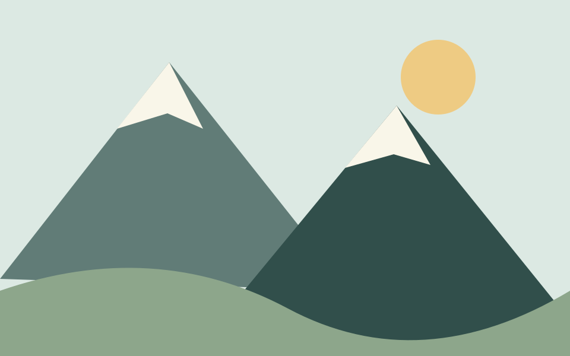
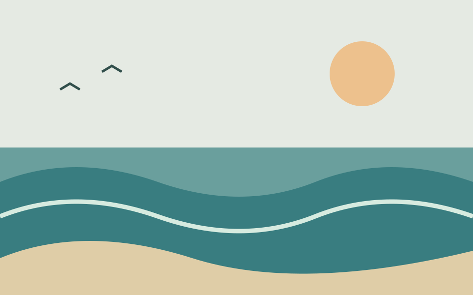

Mountains
High peaks and wide views make the world feel bigger. I like the idea of taking a slow walk and watching the clouds move.
A small field guide / HTML5 final project
From a quiet mountain to the open sea, nature gives us many places to slow down. Explore three landscapes and find your favorite.

High peaks and wide views make the world feel bigger. I like the idea of taking a slow walk and watching the clouds move.
A forest is full of small details: leaves, birds, and light between the trees. It is a lovely place to stop and listen.

Waves bring a steady rhythm to the shore. A simple walk along the beach is my idea of a peaceful afternoon.
Take care, wherever you go
Keep exploring
Learn more about enjoying outdoor places responsibly through the Leave No Trace Seven Principles.